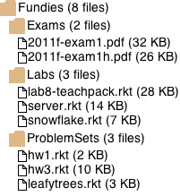

8 Files and Directories

Purpose: The purpose of this lab is to practice working with tree-structured data as well as mutually recursive data.
Textbook references: Chapter 19: The Poetry of S-Expressions, Chapter 20: Incremental Refinement
A File System
Goals: Practice working with tree-structured data.
Starter Code: below are data definitions provided by htdp/dir. Paste them into your code, but comment out the struct definitions.
(require htdp/dir) ; A File is a (make-file String Integer Date String) (define-struct file [name size date content]) ; - where name is the name of the file (including extension) ; - size is the size of the file in bytes ; - date is the last modified date of the file ; - and content is the contents of the file ; A Date is a (make-date Integer Integer Integer Integer Integer Integer) (define-struct date [year month day hours minutes seconds]) ; - where year is the year the file was modified ; - month is the month the file was modified ; - day is the day the file was modified ; - hours is the hour the file was modified ; - minutes is the minute the file was modified ; - and seconds is the second the file was modified ; A Directory is a (make-dir Symbol [List-of Directory] [List-of File]) (define-struct dir [name dirs files]) ; - where name is the directory path ; - dirs is the list of sub-directories in this directory ; - and files is the list of files in this directory ; (not including the ones in sub-directories) (define EMPTY-DIR (make-dir 'hopes&dreams '() '())) (define CAREER (make-dir 'Career (list (make-dir 'CareerApplications '() (list (make-file "CoverLetter.doc" 31744 (make-date 2015 9 20 11 36 25) "") (make-file "EmploymentApplication.pdf" 231010 (make-date 2015 10 13 13 10 0) ""))) (make-dir 'CareerMyJob '() (list (make-file "BackgroundCheck.pdf" 1040138 (make-date 2016 8 23 10 27 10) "") (make-file "I9.pdf" 963654 (make-date 2015 11 20 15 49 45) "") (make-file "JobOffer.pdf" 507887 (make-date 2015 11 20 15 49 0) "")))) (list (make-file "References.docx" 11634 (make-date 2016 8 6 9 55 15) "") (make-file "Resume.doc" 34816 (make-date 2016 10 12 13 18 12) "") (make-file "Transcript.doc" 140288 (make-date 2015 9 11 9 3 0) "")))) ; file-temp : File -> ? (define (file-temp f) (... (file-name f) (file-size f) (date-temp (file-date f)) (file-content f))) ; date-temp : Date -> ? (define (date-temp d) (... (date-year d) (date-month d) (date-hours d) (date-minutes d) (date-seconds d))) ; directory-temp : Directory -> ? (define (directory-temp d) (... (dir-name d) (lod-temp (dir-dirs d)) (lof-temp (dir-files d)))) ; lod-temp : [List-of Directory] -> ? (define (lod-temp lod) (cond [(empty? lod) ...] [(cons? lod) (... (directory-temp (first lod)) (lod-temp (rest lod)))])) ; lof-temp : [List-of File] -> ? (define (lof-temp lof) (cond [(empty? lof) ...] [(cons? lof) (... (file-temp (first lof)) (lof-temp (rest lof)))]))
Sample Problem Design a function that consumes a Directory and produces the total number of files in it, however deeply they might be nested inside directories.
; count-files : Directory -> Natural ; Count the number of files in d and its sub-directories recursively (define (count-files d) (foldr (λ (sub-dir count) (+ (count-files sub-dir) count)) (length (dir-files d)) (dir-dirs d))) (check-expect (count-files EMPTY-DIR) 0) (check-expect (count-files CAREER) 8)
Exercise 1 Define some example directories using the files and directories on your computer by calling create-dir. You may notice that the content field for the files is always an empty string. This is because actually getting all the contents of your files would take a lot of memory and we want to do fun things with this data instead of waiting for it to get all the contents of all your files.
Exercise 2 Design a function that consumes a Directory and a string and determines whether or not a file with that name exists in the directory or any of its subdirectories.
Exercise 3 Design a function that consumes a Directory and computes the total size of all files in the whole directory tree. You may assume that directories take up no space.
Switch pair programming roles before continuing!
Exercise 4 Design a function that consumes a Directory d and two Strings src and target, and produces a Directory which has the same files as d but with all files named src renamed to target. Do not rename directories.
Exercise 5 Design a function that consumes a Directory d and a Number n and returns a list of file names in the directory tree of d with size at least n.
Switch pair programming roles before continuing!
The Man Behind The Curtain
; A FSC (FileSystemCompotent) is one of: ; - File ; - Dir ; A Dir is a (make-dir2 Symbol [List-of FSC]) (define-struct dir2 [name contents])
Exercise 6 Design the function num-files/dir, which computes the number of files in a Dir (do not just use your dir->directory from the next exercise and num-files). How does the structue of num-files/dir compare to num-files? Is one easier to read and write than the other? Do you think that would be the case for the other functions in the lab?
Exercise 7 Design dir->directory, a function which takes a Dir and produces a Directory.
Switch pair programming roles before continuing!
Abstraction In Action
Exercise 8 Design fold-dir, which abstracts all of the functions from the first part of the lab (the sample problem and exercises 4-7).
Switch pair programming roles before continuing!
Before you go...
If you had trouble finishing any of the exercises in the lab or homework, or just feel like you’re struggling with any of the class material, please feel free to come to office hours and talk to a TA or tutor for additional assistance.
Drawing
Exercise 9 Design a function that draws a File as an image. The image has to show the name of the file and its size in kilobytes (note that there are 1024 bytes in a kilobyte).
Exercise 10 Design a function that draws a directory. The image has to show the name of the directory and the number of files in the directory, as well as showing all the folders and files in the directory tree. An example of what this could look like is given below.
